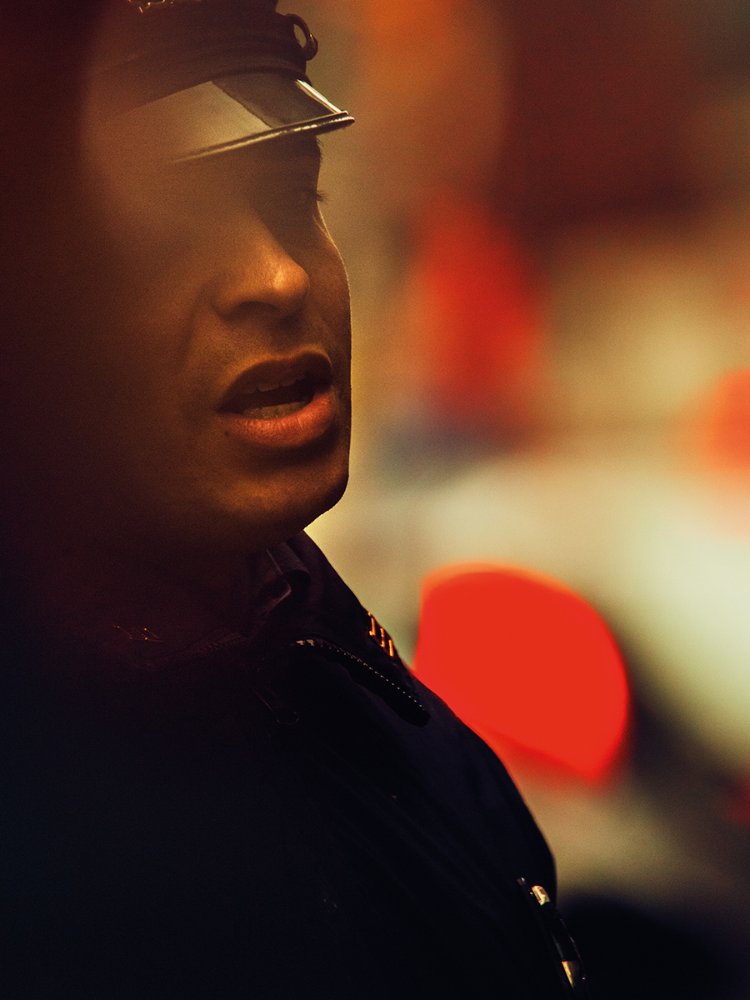
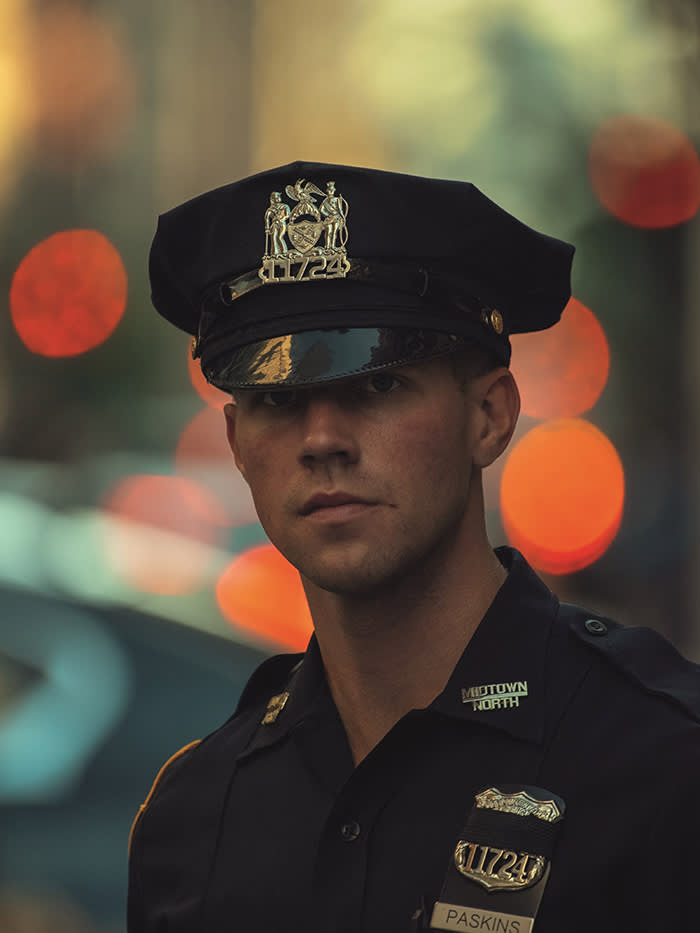

 Christopher Anderson is known for his emotionally charged, artfully drawn images that explore themes of truth and subjectivity. He is one of today’s most influential photographers, whose origins began in war reporting and later transformed into something more intimate, blending the worlds of commercial, art and fashion work, but always with a foundation in documentary.
 Anderson was born in 1970 in Canada and grew up in west Texas. His photographic career began working for local newspapers. In 2000, on assignment for the New York Times Magazine, he boarded a small wooden boat with 44 Haitians trying to sail to America. The boat sank in the Caribbean. The photographs received the Robert Capa Gold Medal and marked the beginning of a ten-year period as a contract photographer for Newsweek Magazine and National Geographic Magazine. In 2011 he became New York Magazine’s first ever Photographer in Residence; a notable collaboration that would also mark Anderson’s shift into portraiture and fashion, making images of significant figures including Barack Obama, Spike Lee and Debby Harry.